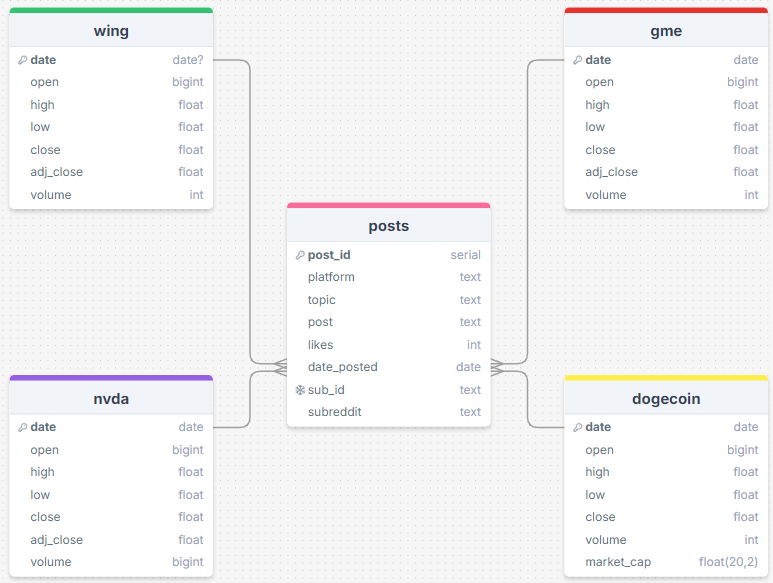
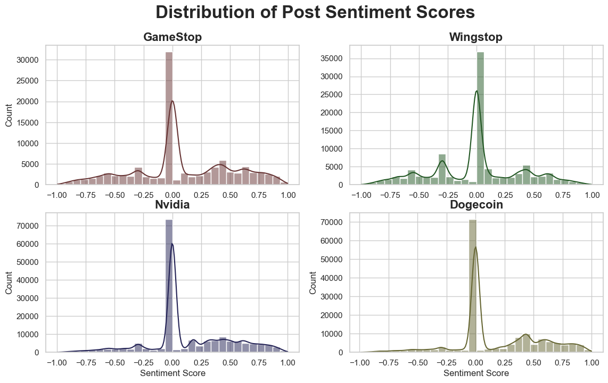
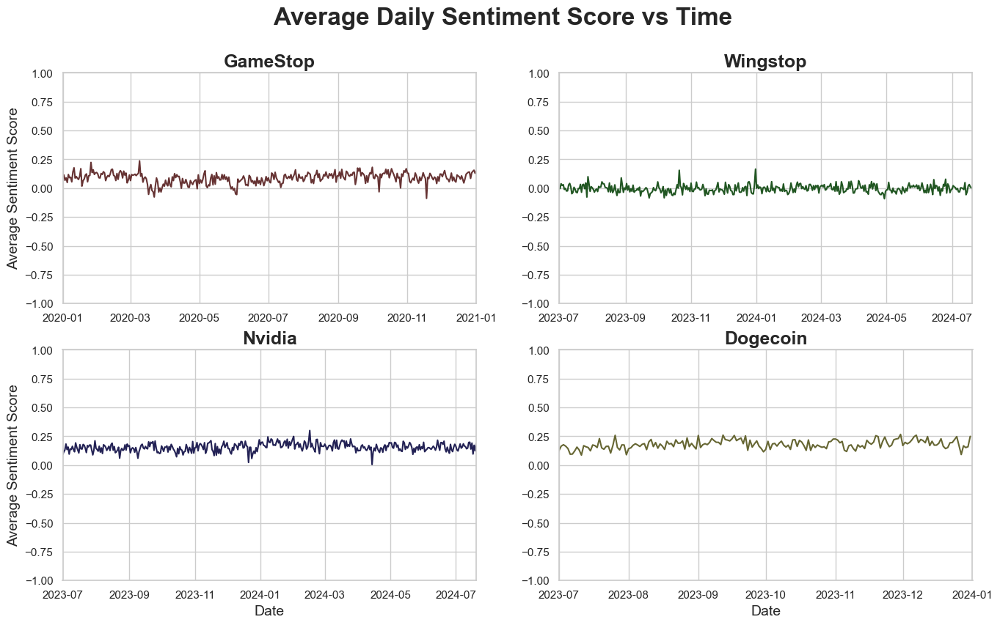
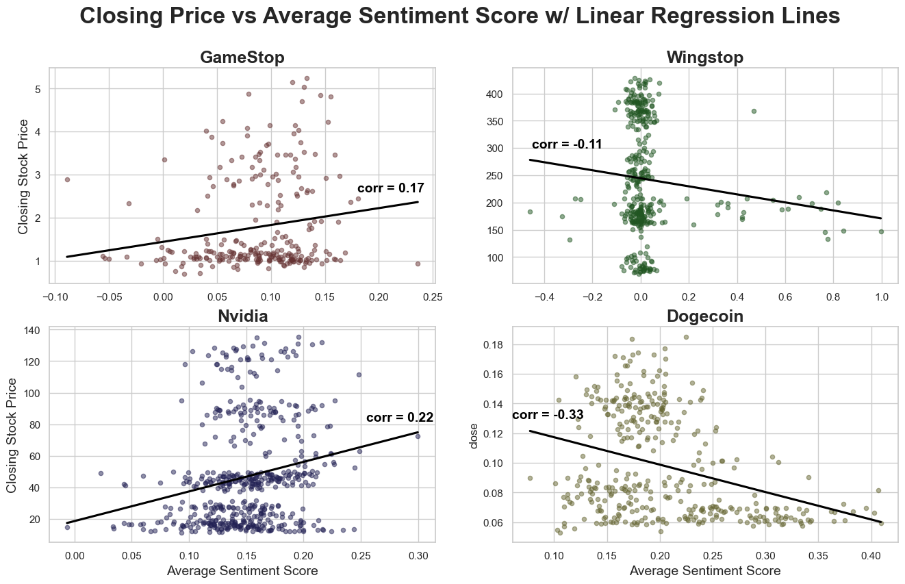
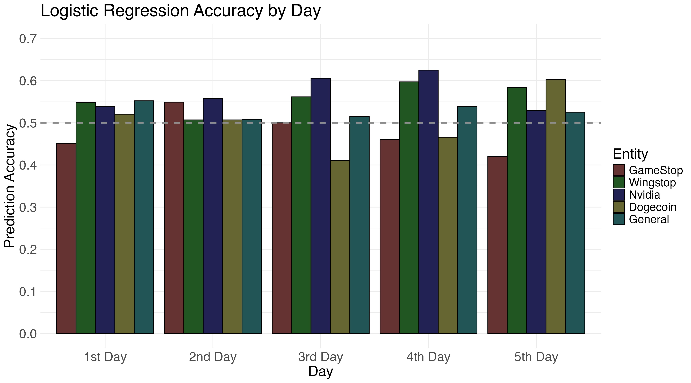
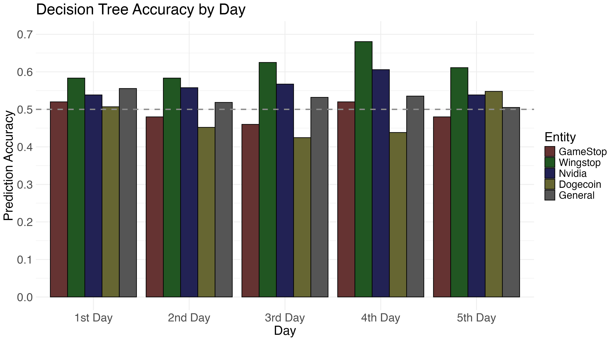
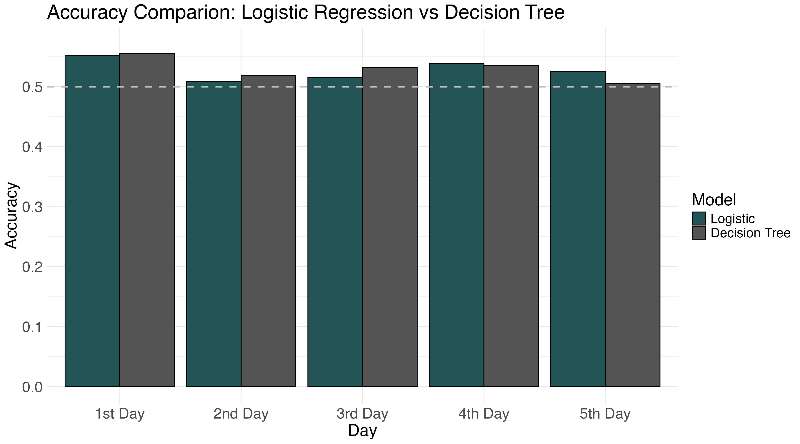

Introduction
In the ever dynamic finance world, traditional methods of analyzing stock market movements are being supplemented by approaches that leverage the vast amount of data available on the internet. One such approach is the analysis of social media sentiment to predict stock market trends. This project aims to utilize the social media posts, specifically those on the X (formerly Twitter) and Reddit platforms, to gain insights into public sentiment and its potential impact on stock prices.
Social media platforms have become significant discourse centers where individuals express their opinions, sentiments, and reactions to various events, including financial markets. The volume of data generated on these platforms provide a unique opportunity to capture real-time public sentiment. By analyzing tweets and correlating them with historical financial data from Yahoo Finance, this project seeks to develop a predictive model that can offer insights into stock market movements.
The project involves several key steps:
Data Collection: Gathering financial data from Yahoo Finance and social media data from X and Reddit posts related to specific stock entities.
Sentiment Analysis: Using natural language processing (NLP) techniques to analyze the sentiment of the collected tweets, categorizing them as positive, negative, or neutral, and aggregating each day’s sentiment into a single score.
Data Integration: Connecting the aggregated sentiment scores with historical stock prices to identify patterns and relationships.
Predictive Modeling: Developing machine learning models to predict future stock price movements based on the analyzed sentiment data.
Evaluation and Validation: Testing the model’s accuracy and reliability using historical data and refining it to improve performance.
By integrating social media sentiment with traditional financial analysis, this project aims to provide a more comprehensive and timely understanding of stock market dynamics. The outcome could potentially aid investors and financial analysts in making more informed decisions, leveraging the collective sentiment expressed on social media as an additional indicator of market trends.
Background
The financial markets have always been influenced by public sentiment, with news, rumors, and opinions shaping the decisions of investors and traders. Traditionally, analysts relied on financial statements, market indicators, and economic reports to gauge market trends. However, the internet and social media have transformed the landscape, providing a new dimension of real-time data. Platforms like Twitter/X and Reddit have become influential platforms where people share their views on market conditions and specific stocks, as well as their views on the companies themselves.
The concept of using social media sentiment as a predictive tool for financial markets has gained traction in recent years, supported by growth in natural language processing (NLP) in machine learning. Studies have shown that there could be a significant correlation between social media sentiment and stock market movements, making it a valuable resource for predicting short-term market trends [1]. This project builds on this emerging field by developing a model that leverages social media sentiment to forecast stock price movements, providing a modern approach to financial analysis.
We chose four stock entities to focus our analysis on: GameStop (GME), Wingstop (WING), Nvidia (NVDA), and Dogecoin (DOGE). GameStop was selected due to it’s short-squeeze in January 2021 which was driven by Reddit. Wingstop and Nvidia were chosen because of their recent growth, which has caused them to become popular topics on social media. Finally, Dogecoin was primarily propelled by social media, as well as endorsements by influential figures such as Elon Musk. This list may seem small compared to the wealth of stock entities, but this is intentional. The primary reason was that we wanted to ensure we were able to collect sufficient social media data given limited resources, as we discuss in the Methods section. Additionally, analysis of how well social media sentiment influences the stock market movement of these entities, if proven consequential, would provide us reason to pursue further research into other entities.
Methods
Data Collection
The data for this capstone project encompass two main areas: social media and stock market. These data focus on three companies and one cryptocurrency. The companies are GameStop, Wingstop, and Nvidia, which are companies that have experienced recent notable growth or decline that could be reasonably attributed to social media movements. The one cryptocurrency, Dogecoin, has been a focus of X CEO Elon Musk. The goal, as mentioned prior, is to determine if it is possible to predict stock market motion using social media sentiment.
The stock market data was acquired via Yahoo Finance. This data is easily accessible. We acquired data for each of the organizations and pushed it into our database.
We used a PostgreSQL database hosted on Railway to store and access our data. This did cost us about $15 over the course of the term, but the tradeoff was worth it for its flexibility and the ability to have our data readily accessible to both of us at any time. We dumped our scraped social media data and stock market data directly into the database using the Python packages SQLAlchemy and psycopg2. We also used these packages to access the most up-to-date data during the data processing and modeling phase.
For social media data, we focused mainly on X and Reddit. On X, we aimed to scrape an average of 250 posts per topic per day for the designated time period. For Reddit, we scraped posts from the organization’s subreddit, usually named after the company/currency; these subreddits were r/nvidia, r/gamestop, r/wingstop, and r/dogecoin. In the case of GameStop and Nvidia, Reddit also had subreddits dedicated to the stocks themselves – r/GME and r/NVDA_Stock – which we also scraped.
Twitter / X Web Scraping
The X web scraper was the more labor-intensive scraper of the two. This is due to a couple of factors. Firstly, since its acquisition by Elon Musk in late 2022, X has imposed strict crackdowns on web scraping through the implementation of rate limits on non-verified accounts. These reading rate limits are reported as 500 posts per day for new accounts, 1,000 posts per day for unverified users, and 10,000 posts for verified accounts [2], though we read well over the 1,000 post limit per day during the scraping phase without hitting a rate wall. Secondly, the X API – through which we would be able to pull the necessary data – is locked behind a paywall of $100 per month [3]. The API does have a free level, but this is limited to posting only. This is infeasible for the scope of this project, and thus required us to devise alternate means of collecting the X data.
The X data was acquired manually through a pair of scrapers: twscrape and a custom Selenium-based webscraper that we built from scratch. The twscrape Python package, written by GitHub user vladkens, works through the authorized X API [4]. We created around 10 accounts that we gave to twscrape, and it was able to acquire a large amount of data very quickly. The drawback of this is that the accounts it used were quickly rate-limited if not outright banned, requiring the constant creation of new accounts. Due to resource constraints, we opted for the slower but more reliable Selenium-based scraper.
Our Selenium-based scraper was designed bespoke for X. In order to avoid hitting the X rate limits, we took a single thread approach, rotating through the 5 X accounts that were not banned during the twscrape scraper phase. During our scraping period, we were fortunate to not encounter any changes to website structure, allowing the scraper to run reliably for long periods of time. Cycling through different accounts also allowed us to avoid running up against X’s rate limits for the most part. For the newer accounts, we did encounter bot deterrents in the form of orbit-matching authentication tests. These often occurred when running the scraper from different internet connections. Though there may be some method to circumvent this measure, we used human intervention and stepped into to solve these when they appeared.
Reddit Web Scraping
For the Reddit scraper, we had to get access to the developer API, which is free to access with a valid Reddit account. Once we had access, we used the PRAW (Python Reddit API Wrapper) package to pull submissions from the above-mentioned subreddits. A limitation of the Reddit API is that Reddit does not allow date filtering in the same way X does. On the other hand, the amount of metadata that can be accessed about each submission is vast. One of these pieces of metadata is date of posting, stored as a UTC string. We were able to pull many new and top posts that fell within a given UTC time range. The limitation on date filtering meant we were unable to pull all of the posts for the date range, but we were still able to scrape a fair number of posts from the subreddits for our analysis.
Ethical Considerations
Many website developers implement rate limits for their users accessing their site through the main interface or through API endpoints. Reddit and X have rate limits implemented for their APIs as well as users just accessing the site for everyday use. As part of our web scraping effort, we wanted to ensure that we respected the rate limits as much as possible while still being able to collect the data we needed for our analysis. For the Reddit API, the free tier is limited to 100 queries per minute, which we did not come close to exceeding at only 6 queries in total. The X rate limit is a bit more complicated. Running our Selenium scraper on a single account for several queries in a row caused it to hit the rate limit after about 4 to 5 searches. However, by rotating the accounts, we gave enough of a “cool down” period to each account to make sure that rate limit was never exceeded. Additionally, we took a single-thread approach to web scraping, only allowing one iteration of it to run at any given time. This was considerably slower, but ensured we were able to scrape without putting undue strain on the website.
Because social media post data are intrinsically tied to the individuals who produced them, we wanted to make sure the data was as anonymized as possible. Thus, we did not collect any user data, and limited our relevant to data to information we could gather from the posts themselves: the date of posting, the content of the post, and the number of likes (for X) or net post score (for Reddit). Doing this alleviates any privacy concerns that may arise.
Sentiment Analysis
The next phase in the project is sentiment analysis. In order to perform the sentiment analysis on social media text data, we used the Python package vaderSentiment, authored by C.J. Hutto and E.E. Gilbert [5]. This package uses VADER (Valence Aware Dictionary and sEntiment Reasoner), a natural language processing tool specifically designed to work well with calculating a sentiment score from social media data, making it apt for this application. Before running our posts through the sentiment analyzer, we first cleaned the data by removing URLs, duplicates, and punctuation. We also converted all of the text into lowercase. We used the SentimentIntensityAnalyzer classifier from the vaderSentiment package to perform the sentiment analysis. Using the VADER model, we found the sentiment score for each individual post and averaged the sentiment scores for each day for each of the four topics of interest. This was done using a simple average, though we did experiment with using a weighted average on likes. This, however, did not result in significant model improvements.
Modeling
The goal of this project was to build a forecasting model for stock closing price movement based on average daily sentiment. Before starting to model, we compared the average sentiment with “close” to determine if there was a significant Pearson’s correlation between the sentiment scores and the measured closing prices. This was to give us an idea of the relationship between our variables of interest, though it did not affect our modeling approaches.
For our model construction, we used the singular feature of average sentiment with a response variable called “change” which could take one of two values: “up” or “down”. Each row is assigned a change value based on the following day’s closing price. If the next row’s closing price is greater than the current row’s, the current row will be assigned “up”. It would be assigned “down” if the reverse occurred. In the case that the closing price did not change from one day to the next, it was assigned the value “noChange”, which we ignored in our logistic regression to make the response binary.
We added additional rows for the changes in following days; change2nd, change3rd, change4th, and change5th. For example, the change2nd column value in a given row would denote the change between the following day and the day after that, the “change from the 2nd day to the 3rd day.” This same idea applies to the rest of the change columns. We added these columns in as additional avenues for modeling.
Logistic Regression
To perform our logistic regression, we used Python’s scikit-learn package. We performed primarily univariate logistic regression, focusing on the average sentiment score as our feature and the change columns as our responses. We built separate models for each of the change columns using the average sentiment. Our data were split into a 80/20 train/test split, with the predicted accuracy gauged against the test response values. The metrics for performance we used was accuracy.
We developed logistic regression models for each of the four stock entities, as well as a model that used all of the four datasets together, which we called our “general” model. The results of these models can be found in the Data section of this document.
Decision Trees
We wanted to build a few models to determine the most predictive system. Another model we built involved decision trees. For these models, we use scikit-learn’s DecisionTreeClassifier classifier. Again, these trees used a single feature (the average sentiment) and an individual response variable (the change) for each model. As before, these models were built with an 80/20 train/test split. The max depth of each tree was held at 3 layers, as we found this to result in the highest accuracy across the board. As in logistic regression, we used accuracy, precision, recall, and f1-score as our primary metrics of performance.
As with logistic regression, we built individual models for each of the four organizations for each of the change columns, as well as a general model consisting of all of the data. One notable difference between the decision tree model and the logistic regression model is the inclusion of the “noChange” response. There were very few instances of this variable occurring, and ultimately its inclusion in the dataset made little change. The ultimate goal of this work was to find which model was better. We used a McNemar test to determine which of these two models performed better.
In the next secion, we will discuss our database and the data we collected.
Data
We chose to host our data in a web-based PostgreSQL database on Railway. This was the easiest way for both of us to have continuous access to the latest data as the web scrapers, detailed in the data section, pulled current and historical data. Our database consists of 5 main tables: 4 tables corresponding to each of the 4 stocks of focus – wing (Winstop), gme (GameStop), nvda (Nvidia), and dogecoin – and 1 table containing all of our posts. The schema of the database is shown below.

The 4 stock tables each consist of 6 common columns:
date: the trading day. This is the primary key of this table.
open: the price of the stock at the start of the trading day in the morning.
high: the highest price of the stock during the trading day.
low: the lowest price of the stock during the trading day.
close: the price of the stock at the end of the trading day in the afternoon.
volume: the total number of stocks traded (either bought or sold) during the trading day.
The nvda, wing, and gme tables include adj_close (adjusted close), which is the price of the stock at the end of the trading day after adjusting for actions that would affect the stock’s price, such as splits, reverse splits, and dividends. Instead of adj_close, the dogecoin table includes the column market_cap (market capitalization), which is the total market value of all of a company’s outstanding stock shares.
The posts table has 8 columns, though we found that only a few were relevant to our analysis. The columns were:
post_id: a serial value that assigns a number to each inserted post. This is the primary key of this table.
platform: the social media platform the post is scraped from (either Twitter/X or Reddit).
topic: the company of interest.
post: the content of the post, excluding any attached media.
likes: the number of likes (in the case of Twitter/X) or the net score (for Reddit) of the posts.
date_posted: the date the post was posted.
sub_id: for Reddit posts, the unique id identifying a submission.
subreddit: for Reddit posts, the subreddit the posts were pulled from.
For our sentiment analysis and modeling, we only used the topic, post, likes, and date_posted columns.
The social media and stock market tables were joined on the date in order to facilitate the easy comparison of aggregated sentiment scores to the stock market trading day.
In the end, we had the following totals for each stock entity:
GameStop: 105,573 posts (Jan 2020 - Jan 2021)
Nvidia: 201,577 posts (Jan 2022 - Aug 2024)
Wingstop: 122,422 posts (Jan 2022 - Aug 2024)
Dogecoin: 236,641 posts (Nov 2021 - Jan 2023)
The stock market data was easily accessible from Yahoo Finance. We were able to get data detailing the stock market motion for each of the four aforementioned organizations. These data were linked to the social media data based on the date of posting. It is important to acknowledge that fluctuations in the stock market can be measured on the level of hours, if not minutes, but for the purpose of our analysis we limited our resolution to the level of the day. Future work can be done with higher resolution, though this would likely require access to APIs.
Results
We analyzed the relationship between social media sentiment and stock market movements, focusing on financial data from Yahoo Finance and tweets related to companies like Nvidia, Wingstop, Dogecoin, and GameStop. The analysis involved fetching tweets, performing sentiment analysis, and correlating the sentiment scores with stock prices.
Sentiment Analysis
The sentiment scores were calculated for each tweet. We experimented with weighted averages based on likes, but we found this to not significantly affect our models, so we decided on a simple average. The distribution of sentiment scores for each entity can be seen below.

Overall, we found that an overwhelming majority of posts were neutral or very close to it for all four entities. We did see a bit of difference: Dogecoin exhibited more positive sentiment than negative, likely due to its promotion by prominent social media figures. Nvidia also had more positive sentiment posts than negative. This can be attributed to the large number of advertisements for Nvidia products on X. GameStop and Wingstop were more even. A more thorough investigation revealed that some of their negative posts were misattributed. For instance, the X post “I want Wingstop so bad” was classified as negative with a score of -0.5413 despite clearly having a positive sentiment. We removed this post from our further analysis, but there are likely more posts for all of the entities that have unrepresentative sentiment scores. However, when averaging the scores by date and entity, we found that the results showed relative stability.

The above chart shows the average sentiment score for each entity plotted over their respective collection periods. With few exceptions, the average sentiment score of each company remained relatively stable between 0 and 0.25. There are some instances where there is a noticeable drop or rise, but overall the trend was quite constant. We proceeded with the analysis with this in mind.
Correlation Analysis
We computed the correlation between daily aggregated sentiment scores and daily stock prices for each company. The results showed varying degrees of correlation, as shown in the scatterplots below.

Nvidia (NVDA): There was a moderate positive correlation of 0.22 between sentiment scores and stock prices, indicating that positive social media sentiment can be generally correlated with an increase in stock prices.
Wingstop (WING): The analysis revealed a weak negative correlation of -0.11, suggesting that Wingstop’s stock price movements may be less influenced by social media sentiment compared to Nvidia.
Dogecoin: The sentiment scores for Dogecoin showed a moderate negative correlation of -0.33 with its market price, reflecting possible high sensitivity of cryptocurrency prices to social media trends.
GameStop (GME): GameStop’s stock prices exhibited a weak positive correlation of 0.17 with social media sentiment, indicating a potential degree of influence by online communities, particularly during periods of high market volatility and public interest.
The findings suggest that social media sentiment can be an indicator for predicting stock market movements, especially for companies and assets that are highly discussed and influenced by online communities. The strength of the correlation varies among different companies, with tech stocks and cryptocurrencies showing stronger relationships. This analysis highlights the potential of integrating social media sentiment analysis into financial models to enhance stock price prediction accuracy. With this in mind, we can move on to our models
Logistic Regression Model
We gauged the aptitudes of these models using accuracy. We fit a logistic model to each entity as well as a “general” model which used all of the data. The results are shown below.

Generally, Wingstop and Nvidia tended to perform the best, reaching their maximums on the 4th day prediction. GameStop and Dogecoin showed some volatility. GameStop consistently performed worse than a coin toss, only crossing the 50% threshold on the 2nd day. Dogecoin showed the most variability with almost a 20% difference from the lowest to highest accuracy predictions. As a result of this dichotomy, the general model stayed relatively consistent, sitting at above 50% for each of the 5 predictions, better than a coin toss.
A note about the logistic regression model is that it tended to produce models that were uniform in their predictions; that is, it would either predict entirely “up” or entirely “down” responses based on the majority of movements in the dataset.
Decision Tree Model
We also utilized a decision tree model for comparison. We used a max depth of 3 nodes for all of the entities. Results can be seen below.

We can see results similar to our logistic regression. Wingstop and Nvidia consistently score among the highest of the entities, with Wingstop coming in at almost 70% on the 4th day. Both of these entities tended to have the highest accuracy on this day, indicating a delayed response to social media sentiment.
Dogecoin and GameStop again display results that oscillate around the 50% threshold. As with logistic regression, Dogecoin’s model tends to perform best on the 1st day and the 5th day. GameStop’s model comparison shows deviation from the logistic model, with the decision tree model prevailing on the 1st and 4th day, where the logistic regression had the best predictions on the 2nd and 3rd days. Due to the univariate model, the complexity of the decision tree model is likely capturing nuance the logistic model missed.
The general model for the decision tree again displays stability near or above the 50% line with a maximum accuracy on the first day at 55%.
Model Comparison
Our ultimate goal is to build a general model that can predict social media movements with some degree of accuracy. Below is a direct comparison of the general models from the logistic regression and decision tree models.

In general, it is pretty straightforward to see the similarity between these models. The decision tree model outperforms the logistic regression model during the first three days, but this relationship switches on the 4th and 5th days. These differences are small though, ranging from 1 to 5%. In order to determine the results of these models were statistically significant, we ran a McNemar test. We found that all of these models except for the 2nd day model were significantly different from each other with p-values much less than 0.
Conclusions
The analysis revealed that average daily sentiment is moderately predictive of daily stock price changes for the entities studied. The entities that performed best individually were Nvidia and Wingstop, indicating a potential strong relationship between the average daily sentiment and their stock price motions. It is important to note that the scraping periods for these entities was the most recent, ranging from the beginning of 2022 to the current day, which suggests a rising relevance of social media in predicting stock trends.
The decision tree model proved to be more effective in predicting stock price movements in the immediate days following sentiment measurement. In contrast, logistic regression demonstrated stronger predictive power when forecasting stock movements 4 to 5 days out from the date of interest.
These findings suggest that while sentiment analysis can serve as a valuable tool for short-term stock market predictions, the choice of model is crucial depending on the forecasting horizon.
To further enhance the practical application of these insights, we developed an R Shiny app to visualize our results. The app features a drop-down menu that allows users to select an entity of interest. After selecting an entity and choosing a date, the app displays a line graph of the closing stock price for that specific date and provides a forecast of the stock price for the following day and four days thereafter. This tool offers an accessible way to leverage sentiment analysis in making informed decisions about stock market movements.
These findings, combined with the R Shiny app, provide a comprehensive approach to predicting stock market movements based on social media sentiment, highlighting the importance of model selection depending on the forecasting horizon.
Our dashboard can be found here.
Future Work
To further enhance our research, several improvements and extensions can be performed. First, we can aim for better time resolution by analyzing data on an hourly basis rather than daily, which could provide more insights into the relationship between sentiment and stock price movements. Expanding the dataset to include a wider range of stock entities could also offer a broader and deeper understanding of how sentiment impacts various sectors of the market. It would also allow us to draw more generalizable results, as only 4 entities may not be a representative sample.
Additionally, incorporating broader market factors, such as macroeconomic indicators, geopolitical events, and industry-specific news would allow for a more comprehensive analysis, recognizing that the stock market is influenced by multiple interconnected factors. Finally, we can work towards developing an enhanced dashboard with live, hourly data updates, which would provide real-time predictive insights and improve the practical utility of our models for traders and investors.